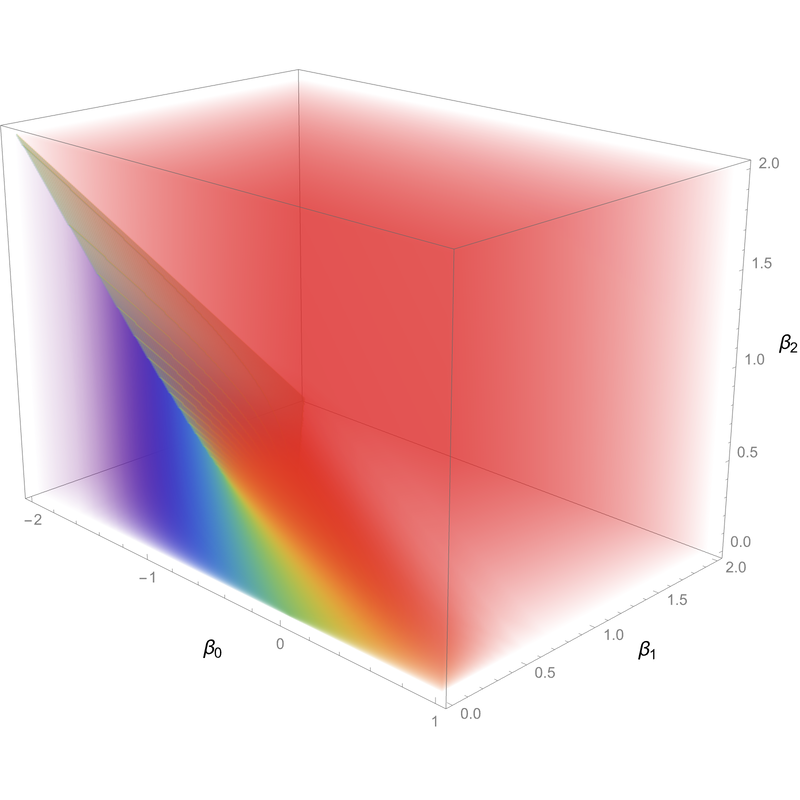
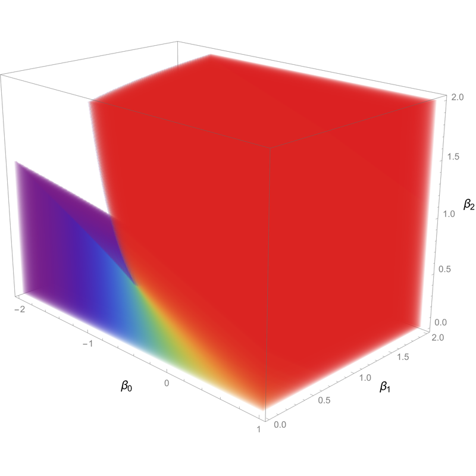
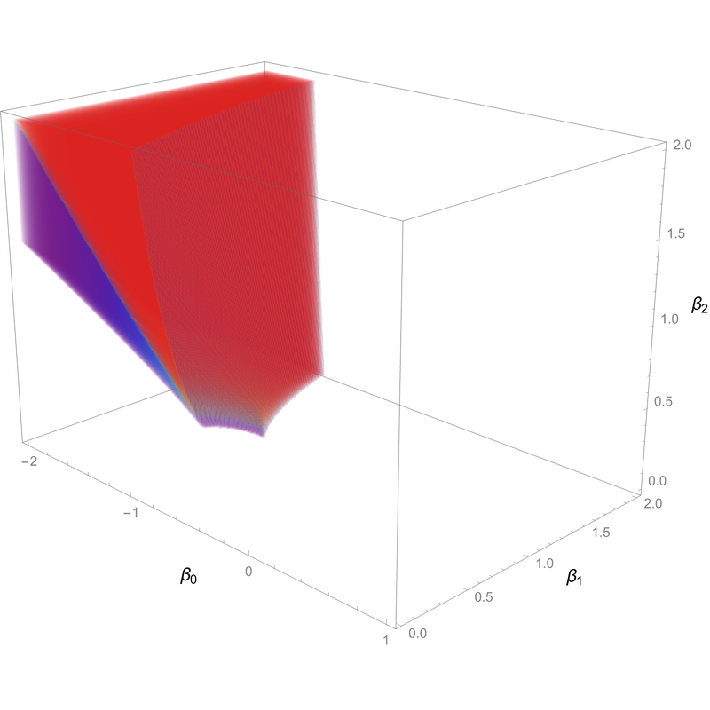
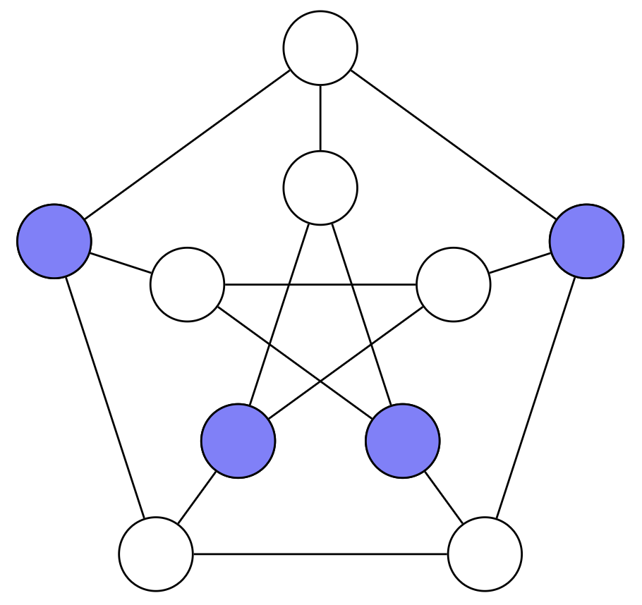
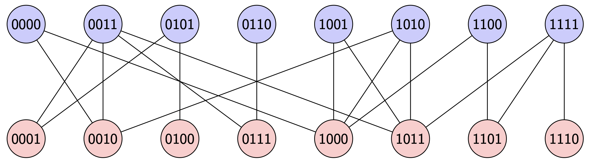
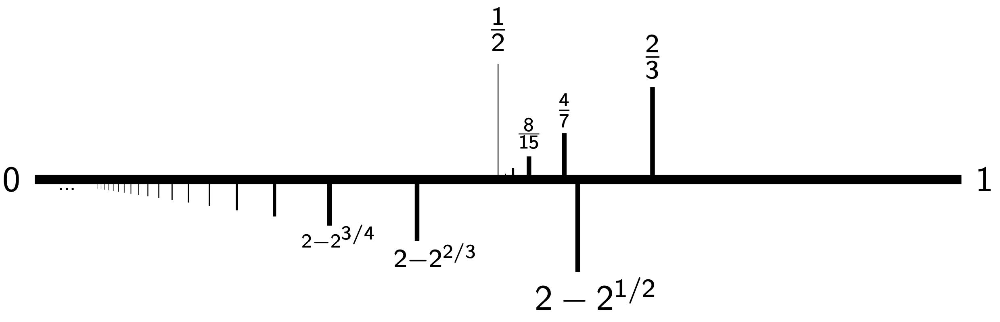

This page contains short descriptions of some of my mathematical research.
For a full list of my publications and preprints, see my CV or my works on arXiv.
Exponential Random Graph Model
ERGMs are exponential families of random graph models.
In other words, an ERGM is a probability distribution on the space of \(n\)-vertex simple graphs \(x\), given by
\[\mathbb{P}[x] \propto \exp \left( H(x) \right), \]
where \(H\) is some function on graphs, called the Hamiltonian.
Typically, \(H\) will be a linear combination of subgraph densities; the most famous example is the edge-triangle model, also called the Strauss model.
Such ERGMs exhibit phase transitions where the macroscopic behavior changes sharply as the parameters are varied smoothly.
One may define high-temperature and low-temperature regimes for these models, and generally the behavior at low temperatures is more difficult to understand rigorously.



Left: the phase diagram of an ERGM with three parameters corresponding to edge count, wedge count, and triangle count.
Certain portions of the diagram have been made transparent so that the inner detail, including the surface of phase transition, can be seen.
Middle: the high-temperature regime of parameters, which is disjoint from the surface of phase transition.
Right: the low-temperature regime, which includes the surface of phase transition.
In my first paper in this area, I prove a concentration inequality for ERGMs in the low-temperature regime,
which shows that Lipschitz observables of samples exhibit Gaussian-type concentration, with a rate which depends on the Lipschitz behavior of the observable.
This extends the work of Ganguly and Nam from the high-temperature to the low-temperature regime.
Their applications also extend, and I obtain a bound on the Hamming-Wasserstein distance between an ERGM and a corresponding Erdős–Rényi random graph,
as well as a central limit theorem for the count of edges in certain small subcollections.
In order to prove these results, I introduce a new modification of a method due to Chatterjee which allows one to prove
concentration inequalities using various markers of rapid mixing for an appropriate Markov chain.
To apply this to ERGMs, I make use of recent work of Bresler, Nagaraj and Nichani, which proves metastable mixing
for low-temperature ERGMs; this can be viewed as a form of mixing "within a phase" for these models.
Additionally, a new argument which gets around the use of the FKG inequality in certain cases is also presented in this work.
In my second paper in this area, I prove a quantitative central limit theorem for the full edge count in an ERGM.
This means that the number of edges, when properly rescaled, converges to a Gaussian random variable, and the rate of convergence can be quantified in terms of some natural
distances between probability distributions.
This makes use of a new application of Stein's method due to Fang, Liu, Shao and Zhao, which allows one to prove quantitative CLTs
for observables under nonlinear exponential tilts of product measures (this includes ERGMs).
The key input in this argument is to show that the fluctuations of subgraph counts under ERGMs are driven by the fluctuations of the overall edge count; in other words, it is
a sort of linearization of the subgraph counts.
This was first done in the case of triangle counts by Sambale and Sinulis via functional-analytic techniques.
The main contribution of my work is to supplant these techniques by a more intuitive argument which also yields improved bounds, and moreover works for the low-temperature
regime of parameters, which was previously unexplored.
My argument is also flexible enough to allow for a proof of a quantitative central limit theorem for the degree of a vertex, which was not previously known even in the
high-temperature regime.
Independent Sets in a Percolated Hypercube
Independent sets are sets of vertices in a graph which contain no neighbors.
They are ubiquitous in computer science and statistical mechanics, as many questions can be rephrased in terms of independent sets in appropriate graphs;
moreover calculating the number of independent sets in an arbitrary graph is an NP-complete problem.
In joint work with Mriganka Basu Roy Chowdhury and Shirshendu Ganguly,
we investigated the number of independent sets in a random subgraph of the Boolean hypercube obtained by performing percolation with parameter \(p\) (which is the
probability that an edge is retained, not deleted),
and characterized its distribution for a wide range of values of \(p\).
We denote the \(p\)-percolated \(d\)-dimensional hypercube by \(Q_{d,p}\), and the number of independent sets in this graph by \(i(Q_{d,p})\).


Left: the blue vertices of the Petersen graph form an independent set.
Right: a sample of \(Q_{4,\frac{2}{3}}\).
Note that this graph is bipartite with an even side and an odd side; the parity here refers to the number of \(1\)s in the bit string corresponding to a vertex.
In our first paper in this area, we develop a novel probabilistic technique to study the distribution of \(i(Q_{d,p})\).
For any fixed \(p > 0\), a typical independent set in \(Q_{d,p}\) will be contained mostly in the even or odd side, but will have many defect vertices in the opposite side.
We can study these defects using polymer models, which are a useful tool from statistical mechanics.
The use of polymer models for this problem was first done in the \(p=1\) case by Jenssen and Perkins, and was adapted to an annealed version of the general case by Kronenberg and Spinka.
We construct a new random polymer model that allows us to understand the quenched behavior of this model in a much more intricate way.
This leads to a central limit theorem for \(i(Q_{d,p})\) when \(p > \frac{2}{3}\), resolving a question asked by Kronenberg and Spinka, and we also obtain a lognormal limit at \(p = \frac{2}{3}\), which is
a critical value at which this model undergoes a concentration–anticoncentration phase transition.
In a forthcoming work, we extend our techniques below \(p = \frac{2}{3}\), and cover all values of \(p > 0.465\); notably, this is strictly less than \(p = \frac{1}{2}\), a value which is of much interest
in \(Q_{d,p}\) as it is a point of phase transition for many other features of this random graph.
We find that in fact there is no real substantial phase transition for \(i(Q_{d,p})\) at \(p = \frac{1}{2}\), although there is a more subtle way in which the formulas involved in our theorem must change at this value.
In order to extend our analysis, we need to consider cases where the defects behave in more complicated ways, with an intricate clustering structure appearing at \(p = 2 - \sqrt{2} \approx 0.586\) and below.
In this regime, the defects form either monomers or dimers (size-two polymers), and the regime which we cover (down to approximately \(0.465\)) is exactly the regime of parameters
for which these two classes of defects can be shown to be roughly independent of one another.

A phase diagram for independent sets in \(Q_{d,p}\).
The numbers on the bottom indicate \(p\)-values below which more intricate types of polymers appear: dimers appear below \(2 - 2^{1/2}\), trimers appear below \(2 - 2^{2/3}\), et cetera.
On the top, we see a sequence of phase transitions beginning, on the right at \(p = \frac{2}{3}\), with the concentration-anticoncentration transition; the others are higher-order analogs of this transition which only affect
the formulas describing the model, not its overall probabilistic behavior.